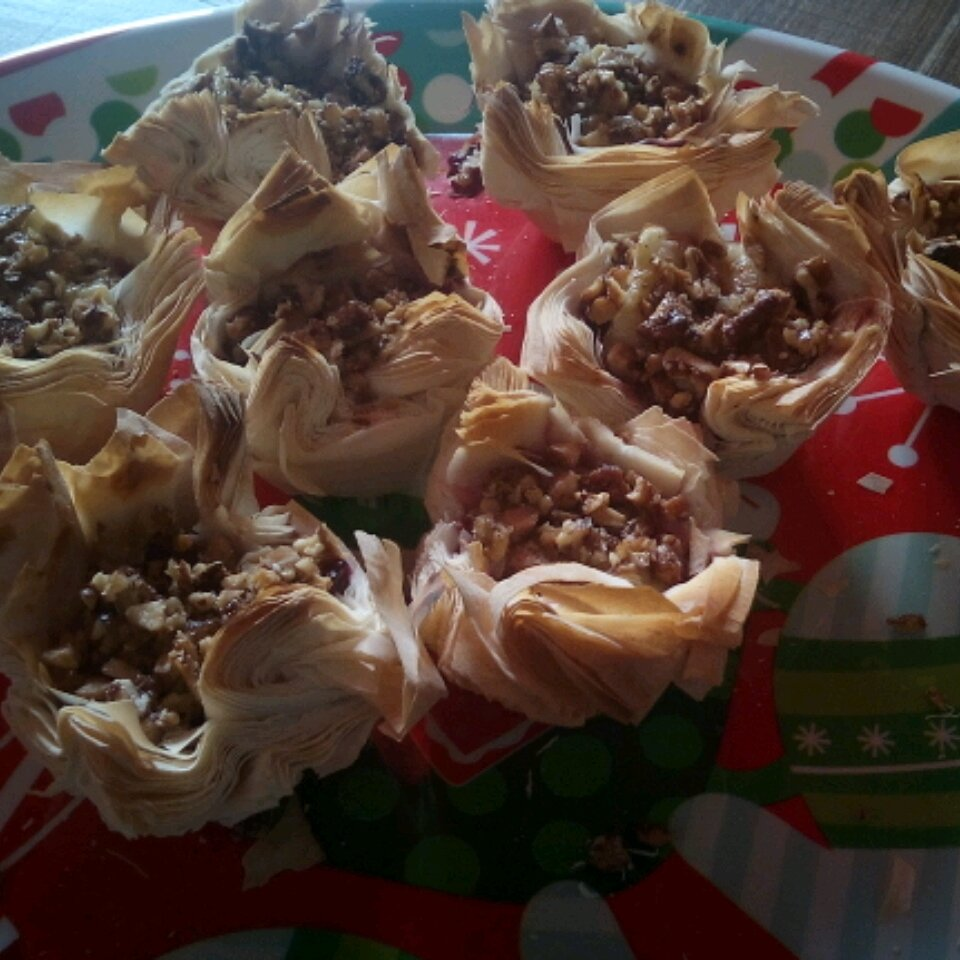

Cranberry pie Bites

Description
Tangy cranberry, creamy brie, and crunchy walnuts come together in a
buttery shell for an appetizer that will wow your guests. Bonus: These can
be made up to 3 days ahead; wrap them in plastic wrap before the baking
step and store in the refrigerator. Serve warm or at room temperature.
Ingredients
- 1 (8 ounce) round Brie cheese, rind removed
- cooking spray
- 1 sheet frozen puff pastry, thawed
- ½ cup cranberry sauce
- ⅓ cup finely chopped walnuts
- sea salt to taste
Steps
-
Place Brie cheese in the freezer for 20 minutes. Oil a mini muffin pan
with cooking spray.
-
Roll 1 puff pastry sheet out into a 10x14-inch rectangle. Cut the sheet
lengthwise into 4 even strips and crosswise into 6 even strips; there
should be 24 squares. Separate and press them gently into the muffin
cups.
-
Cut chilled Brie cheese into 24 pieces approximately 3/4-inch in size.
Add 1 teaspoon cranberry sauce to each pastry-lined muffin cup; press in
1 piece of Brie and top with 1 teaspoon of chopped walnuts. Sprinkle
bites with sea salt. Chill for at least 30 minutes and up to 3 days.
- Preheat oven to 400 degrees F (200 degrees C).
-
Bake bites in the preheated oven until golden brown, 18 to 20 minutes.